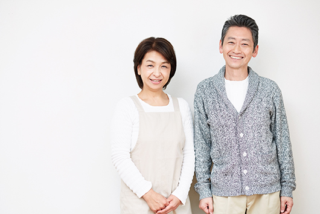
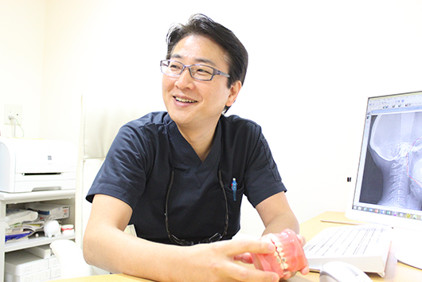
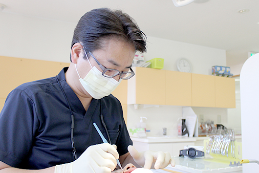

- ホーム
- 40代以降の矯正治療
40代以上で矯正治療をお考えの方へ
「矯正歯科治療は子どもや若年層の人が受けるもの」というイメージを持っている方は少なくありません。40代以降の方が矯正を始めたいと思っても、「大人が矯正をしても効果がないのではないか？」「大人になってから矯正を始めるのは恥ずかしい…」という不安や抵抗感をいだきやすい傾向にあります。
たしかに、40歳以降の大人は若年層と比べると骨が硬くなっていますが、矯正治療で歯並びをきれいに整えることは十分に可能です。実際、50～60代で矯正治療を始められる方もいらっしゃいます。
また、最近は気づかれにくい裏側矯正（舌側矯正）を利用することで、見た目を気にする方でも矯正治療をしやすくなってきました。年齢や見た目の問題で矯正治療を諦める必要はありません。少しでも興味をお持ちの方は、川崎市・たまプラーザの矯正治療専門医院「くらしま矯正歯科」までお気軽にご相談ください。

歯並びが悪くて、以下のようなお悩みを抱えていませんか？
- 口元の見た目が気になる
- ブラッシングがうまくできなくて、歯周病や虫歯が悪化する一方
- 歯の隙間に食べ物が挟まって不快な思いをしたことがある
- 噛み合わせが悪くて肩こりや頭痛が増えてきた
- 顎関節症や発音障害が気になってきた
歯並びの悪さは審美性を低下させるだけではなく、お口や体の健康に影響を及ぼします。
年齢を重ねると、次第に歯周病リスクが高まったり体の疲れを感じやすくなったりしてくるものです。若い頃は何の問題を感じていなくても、40代以降になると一気に歯並びの乱れによって上記のような症状が引き起こされるリスクも生じます。
人生100年時代と言われている現代。長く健康に生活するためには、40代以降であっても矯正治療で心身を健康に保つことが大切なのです。

40代から矯正をおすすめする理由
当院が40代の方に矯正をおすすめする理由は、審美性だけではなく健康面でのメリットが大きいためです。
平成28年厚生労働省の歯科疾患実態調査では、「40歳以上の方で、全て自分の歯を持っている」という人は約2人に1人で、50歳を超えると61.5%※もの人が自分の歯を失っていることがわかりました。これは、40代以降になるとホルモンの変化やだ液量の減少により、口腔内の細菌が増殖しやすくなる影響で虫歯や歯周病が増えることが原因だと考えられています。
※出典元：https://www.mhlw.go.jp/toukei/list/dl/62-28-01.pdf
さらに、健康な歯でよく噛んで食事することは、全身の活性化や心の健やかさにもつながります。見た目の改善を目指したい方はもちろん、40代以降における心身の健康を促進したい方も矯正を検討してみてはいかがでしょうか。
よくある質問
-
Q
矯正歯科治療は何歳まで受けられますか？
A
矯正治療に年齢制限はありませんので、何歳になっても治療を始められます。
ただし40代以降になると、歯周病が進行して歯がグラグラになっていたり重度の虫歯が存在していたりする可能性があります。この場合は、先に治療を行ってからでないと矯正治療が始められないケースもあることをご了承ください。また、悪い噛み合わせを何十年も放置すると治療ができなくなる可能性がありますので、できるだけ早い段階で治療を開始することをおすすめします。
-
Q
ブリッジや差し歯があります。矯正歯科治療はできますか？
A
ブリッジや差し歯があっても、問題なく矯正治療を行なうことができます。
ただし、天然歯（治療をしていない歯）と比べるとどうしても接着剤がつきにくくなるため、何度か治療途中で矯正装置が外れてしまう可能性があります。外れたときには再度接着剤でつけ直せば、問題ありません。
なお矯正治療後は歯が移動しますので、従来のブリッジや差し歯が合わなくなってしまうことがあります。審美性や機能性を高めるためにも、新しい噛み合わせに合わせてブリッジや差し歯をつくり直すことをおすすめします。
-
Q
親知らずや虫歯は一緒に治療できますか？
A
当院は、矯正治療専門医院です。同じ歯科医でも専門性に違いがあるため、虫歯治療はかかりつけ歯科医院にご相談いただくか、当院にてご紹介する歯科医院にて行っていただくことをお願いしております。これは、親知らずの抜歯に関しても同様です。
治療内容ごとにその道のプロに処置してもらうことが、患者さまにとってメリットが大きいと考えています。内科の専門医が心臓外科手術を行なわないことと同じだとイメージしていただければ、わかりやすいかもしれません。
-
Q
矯正費用を分割して支払うことはできますか？
A
院内分割払いをご利用いただけば、診断後2年間で無利息の分割払いが可能です。なお、支払い方法は「一括払い」「院内分割払い」「クレジットカード払い」の3つを用意しております。
-
Q
矯正歯科の費用も医療費控除の対象になりますか？
A
40代以降の矯正であっても、日本矯正歯科学会認定医の診断書があれば医療費控除が可能です。ただし同じ歯列矯正でも、見た目を美しくすることが目的の治療は対象になりません。実際は、歯列矯正する方のほとんどが咀しゃく障害や噛み合わせに問題をお持ちなので、控除の対象になるケースが多いです。
「審美的改善に該当するのか」「咀しゃく障害の改善などに該当するのか」といった判断は矯正歯科の担当歯科医が行ないます。この際、日本矯正歯科学会認定医から診断書を出してもらえれば、医療費控除が認められます。
-
Q
矯正治療で医療費控除を受けるための条件は？
A
医療費控除とは、1月1日～12月31日の1年間で支払った医療費が10万円を越えたときに、超過した費用に対して所得税の一部が還付・軽減される制度です。本人だけではなく、生計を同じにする配偶者・親族などが支払った医療費も対象となります。
医療費控除を受けたい方は、支払った医療費を記載した「申告書」と「医療費控除の明細書」を管轄の税務署または区役所に提出する必要があります。
控除額は以下の式で算出され、申告の上限額は200万円です。
医療費控除額＝1年間の医療費の総額－保険金等の収入－10万円もしくは所得金額の5%
なお、年間所得が200万円未満の場合は、所得×5%を基準とした超過分に対して適用されます。 -
Q
部分矯正はできますか？
A
はい。当院では部分矯正も行なっています。
ただし、問題がある歯だけに装置をつけて歯並びを整えることはできません。全体の噛み合わせを考えたうえで、どこからどこまで装置をつけるのかについて判断する必要があります。矯正装置をつける範囲や治療期間には、個人差があることをご了承ください。
-
Q
目立たない矯正器具はありますか？
A
当院では、以下の3つの目立たない矯正器具を用意しております。
- セラミック製マルチブラケット装置
…白いセラミックでできた矯正装置で、歯の色になじみ遠目には装置がほとんど目立ちません。 - マウスピース型矯正装置
…取外し可能な透明マウスピースを装着いただくため、目立ちにくく食事の際に取り外すことも可能です。 - 裏側矯正（舌側矯正）
…歯の裏に矯正装置をつけるため、人前に出る職業の方でも気づかれずに矯正が可能です。
患者さまの歯の状況やお予算に合わせて最適な矯正器具をご提案いたします。お気軽にご相談ください。
- セラミック製マルチブラケット装置
-
Q
表側矯正と裏側矯正の違いは何ですか？
A
表側矯正と裏側矯正の違いは、歯を動かすためのブラケットという装置を「歯の表側につけるか」「裏側につけるかの違い」です。矯正装置が見えることを気にしないのであれば「表側矯正」、矯正装置が見えることを避けたいのであれば「裏側矯正」をお選びいただけます。
以前は表側矯正に使うブラケット素材が金属だったので、矯正治療中の審美性を求められる方は、裏側矯正しか選択肢がありませんでした。しかし、ブラケットの開発は日々進んでおり、現在は歯の色にそっくりで変色しないセラミックブラケットが主流となりました。
さらに、従来は金属製だったブラケットをつなぐワイヤーも、白くコーティングされたホワイトワイヤーが新たな選択肢として開発されています。そのため、表側矯正でも以前よりは装置が目立たなくなってきてはいます。
それでも、表側に装置がつくことにどうしても抵抗がある場合は、裏側矯正が有効です。これまでの裏側矯正には「しゃべりにくい」「舌が痛い」「食べ物が詰まる」「ブラッシングしにくい」などの問題がありましたが、現在は装置の進化にともない、快適に矯正治療ができるようになりました。
表側と裏側で治療期間や仕上がりに差が生まれることはありませんが、費用は裏側矯正のほうが高いケースが多いです。治療中の見た目やご希望の費用に合わせて、表か裏かをご選択ください。
-
Q
矯正治療期間と通院間隔はどれくらいですか？
A
治療の難易度、歯の動き方による個人差はありますが、通常の治療方法で平均1年半～2年くらいが一般的な治療期間です。通院ペースは1ヵ月に1回が平均的で、矯正の種類によって治療期間に大きな違いがあらわれることはありません。
-
Q
しばらく通院できなくても大丈夫ですか？
A
治療の進行は遅れてしまいますが、「矯正装置が壊れて痛い」ということがなければ、診療の期間が空いてしまっても問題ありません。
矯正治療は少しずつ歯を動かす必要があるため、長い治療期間を要します。そのため、出産やけがによる入院、子育てや仕事などの理由により、しばらく通院できなくなってしまうことは珍しくありません。
ただし、通院できない期間中に矯正装置が壊れてしまったときは、なんらかの応急処置が必要になる可能性があります。安全のためにも、一度当院までご連絡ください。
-
Q
矯正治療中の痛みはどの程度ですか
A
大人の矯正治療は痛いと言われていますが、日常生活に支障が出るような痛みが生じることはありません。痛みの感じ方には個人差がありますが、実際に当院に通院中の方のなかには「まったく痛くないです」と言われる患者さまもたくさんいらっしゃいます。
ブラケットにワイヤーを装着すると、歯列のでこぼこを治そうと持続的に歯に力がかかります。歯が動くときに骨の中の歯根周囲で炎症反応がおきることで、痛みが生じることがあるかもしれません。この際、虫歯の痛みとは違った、歯が浮くような感覚や噛むときの鈍い痛みを感じる方が多いです。
当院では、治療初期には極めて弱い力で歯を動かしますので、炎症の度合いが少なく、あまり痛みを感じません。万が一痛みが生じたときは数日続くことがありますが、1週間くらいで消失します。
-
Q
矯正歯科治療中のブラッシングは大変ですか
A
歯に何もつけていない状態と比較すると、どうしてもブラッシングは大変になります。また、矯正中は口の中の細菌が増えやすくなるため、虫歯や歯周病といったお口の中の病気になりやすくなります。矯正中はいつもよりしっかりとブラッシングして、病気を予防しましょう。
-
Q
矯正装置をつけたら食べ物の制限はありますか？
A
治療を始めたばかりの矯正装置は、細く柔らかいワイヤーを使用しています。そのため、キャラメル、ガム、グミなどの食べ物は控えたほうが無難です。食べ物が引っ掛かり、ワイヤーが外れてしまうことがあります。
ある程度治療が進めばワイヤーは太くなっていくため、基本的に食べ物の制限は少なくなります。
-
Q
矯正歯科の治療後、もとに戻ったりしませんか？
A
矯正装置を外したあとは、歯並びを固定させるための「保定」を行います。装置を外したあとの歯はかなり動揺して動きやすくなっていますが、きちんと保定を行なうことで、もとに戻ることを防ぐことが可能です。
通常、保定には「保定装置（リテーナー）」と呼ばれる取り外し可能な装置を用います。歯の位置が安定してくれば、就寝時のみ装着するようにしても問題ありません。
保定を最低2～3年使い続けることで、正しい噛み合わせを長く維持できるようになります。また歯並びがきれいになっても、年1回は定期健診の受診をおすすめします。
療期間中の注意点
生活での注意点
40代以上の大人の方が矯正治療を進める際は、以下の3つの生活面における注意点をご理解ください
| はじめは発音しにくいことがある | 唇側に矯正装置を付ける表側矯正ではほとんど影響ありませんが、歯の裏側に装置をつける裏側矯正（舌側矯正）の場合、発音のしにくさを感じることがあります。はじめは、「さ行」や「た行」が発音しにくくなりますが、2～3週間経つと慣れて気にならなくなるケースが多いです。 |
|---|---|
| スポーツのケガに気をつける | 矯正装置をつけている間は、激しいスポーツは避けましょう。口腔内を怪我してしまう恐れがあります。どうしてもスポーツをしたい場合は、申し出ていただければ、口腔内を保護するプラスチック製の保護カバーをご案内いたします。分 |
| 楽器演奏に影響が出ることがある | 矯正装置をつけている最中は、吹奏楽器の音が思うように出せなくなってしまうことがあります。慣れれば改善されますが、はじめは練習が大変かもしれません。 また、表側矯正の場合、唇にマウスピースを押し当てて演奏する楽器で痛みを感じやすいです。この場合もカバーなどで対処できる可能性がありますので、お気軽にご相談ください。 |
食事の際の注意点
矯正をしているときは、装置が外れたり痛みを感じたりしないように食事に気をつける必要があります。装置をつけている間は、以下のような食材に注意してください。
| 硬い食材 | せんべい、スルメイカ、りんご、ステーキ、とうもろこし など |
|---|---|
| くっつきやすいもの | ガム、チューイングキャンディー、キャラメル、餅 など |
| 絡まりやすいもの | 水菜、ニラ、ネギ、えのき、麺類、筋が多い肉や魚 など |
ただし、上記のような食材であっても、細かく切ってやわらかくなるように調理して少しずつ食べていけば、矯正器具が外れたり痛みを感じたりしにくいです。「矯正に悪いから」と、特定の食材を完全に避けて食事をすることは難しいですし、栄養が偏る原因となります。工夫しながら調理して、バランスのいい食事を意識しましょう。

くらしま矯正歯科の強み
川崎市・たまプラーザの矯正治療専門医院「くらしま矯正歯科」は、日本矯正歯科学会認定による高度な治療が受けられる矯正治療の専門医院です。なかでも見えにくい裏側矯正（舌側矯正）の技術が高く、全国で60名のみの「日本舌側矯正歯科学会認定医」として多くの患者さまのお悩みと向き合ってきました。
とくに40代以降は、働き盛りの方やお子さまのハレノヒなどで頻繁に人前へ出る機会がある方が多いため、「矯正装置をつけていることを知られたくない」というご希望をお持ちのケースが多いです。当院は、こういった理由で見た目を気にされる大人の方でも矯正ができるように、裏側矯正をはじめとした目立ちにくい矯正治療メニューを豊富に取り扱っております。
40代以降の矯正治療は、見た目と健康の双方にメリットをもたらしてくれます。矯正治療を気に、今ご自身のお口がどのような状況なのか、これからどうすれば健康的な口腔内環境を維持できるのかについて、一緒に考えていきましょう。